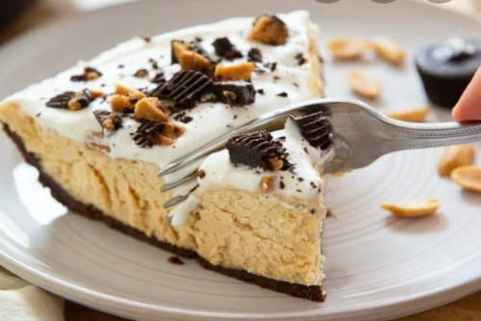
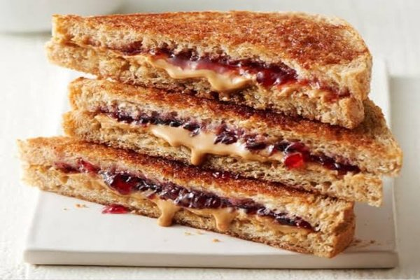
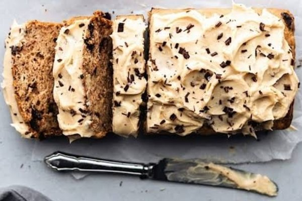
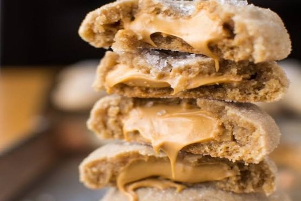

Peanut Butter Pie

INGREDIENTS
1 1/4 cups graham cracker crumbs
3 tablespoons unsalted butter, melted
1 cup heavy cream
8 ounces cream cheese, at room temperature
1 1/4 cups creamy peanut butter
3/4 cup packed light brown sugar
2 tablespoons pure vanilla extract
PREPARATION
Lesson Plan
Preheat the oven to 350°F.
In a bowl, stir together the graham cracker crumbs and melted butter; press into the bottom and sides of a 9-inch pie dish. Bake until brown, about 5 minutes. Set aside to cool completely.
With a heavy-duty stand mixer fitted with the whisk attachment, whisk the cream at high speed until it forms stiff peaks. Transfer to a large clean bowl and set aside.
Fit the stand mixer with the paddle attachment and a clean bowl; add the cream cheese, peanut butter, brown sugar, and vanilla and beat at high speed until the mixture is smooth and silky.
Gently fold the cream cheese-peanut butter mixture into the whipped cream with a spatula until completely blended. Spoon into the cooled pie shell and smooth out the top. Place the pie in the freezer for 1 hour or until ready to serve (if you are going to leave it in the freezer awhile, wrap it in plastic wrap after 1 hour so it doesn't get freezer burn).
Take the pie out of the freezer 15 minutes before serving. Slice it and pig out!
Grilled Peanut Butter Jelly Sandwich

INGREDIENTS
2 (1/2-inch-thick, 4-by-5-inch-long) slices white sandwich bread
2 tablespoons smooth peanut butter
2 tablespoons strawberry jam
1 tablespoon unsalted butter
PREPARATION
1. Place the bread slices on a work surface and spread the peanut butter on 1 slice of bread and the jam on the other; set aside.
2. Melt the butter in a large frying pan over medium heat until foaming. Add the 2 slices of bread filling-side up and cook until the bottoms are golden brown and the filling is warmed through, about 6 minutes.
3. Using a flat spatula, flip 1 slice of bread onto the other to close the sandwich. Transfer to a plate and serve immediately.
Banana Chocolate Chip Cake w/t Peanut Butter Frosting

INGREDIENTS
Cake:
Nonstick vegetable oil spray
3 cups all-purpose flour
2 teaspoons baking soda
2 teaspoons kosher salt
1 1/2 cups sugar
1 cup (2 sticks) unsalted butter, room temperature
1/2 cup (packed) light brown sugar
3 large eggs
1 1/2 teaspoons vanilla extract
2 cups mashed very ripe bananas
1 cup sour cream
1 10-ounce bag mini chocolate chips
Frosting:
2 cups creamy peanut butter
1 1/2 cups powdered sugar
1 cup (2 sticks) unsalted butter, room temperature
2 1/2 teaspoons vanilla extract
Chocolate chips, mini chocolate chips, and chocolate kisses
Special Equipment
Two 8x8x2" cake pans
PREPARATION
For cake:
Preheat oven to 350°F. Coat cake pans with nonstick spray. Line bottom of pans with parchment; coat paper. Whisk flour, baking soda, and salt in a medium bowl. Using an electric mixer, beat sugar, butter, and brown sugar in a large bowl until light and fluffy, about 3 minutes. Add eggs one at a time, beating to blend between additions and occasionally scraping down sides and bottom of bowl. Beat in vanilla.
Add dry ingredients; beat on low speed just to blend. Add bananas and sour cream; beat just to blend. Fold in mini chips. Divide batter evenly among pans; smooth tops.
Bake cakes until a tester inserted into the center comes out clean, about 35 minutes. Transfer to wire racks; let cool in pans for 10 minutes. Invert cakes onto racks; peel off parchment and let cool completely.
For frosting:
Using an electric mixer, beat first 4 ingredients in a medium bowl until a light and fluffy frosting forms, 2-3 minutes.
Place 1 cake on a platter. Spread 1 1/4 cups frosting over. Place remaining cake on top. Cover top and sides of cake with remaining frosting. Garnish with chocolate chips and kisses. DO AHEAD: Cake can be made 2 days ahead. Cover and chill. Let stand at room temperature for 1 hour before serving.
Peanut Butter Filed Cookies

INGREDIENTS
FOR THE FILLING
1 c. creamy peanut butter
1/2 c. powdered sugar
FOR THE COOKIES
1/2 c. creamy peanut butter
1/2 c. (1 stick) butter, softened
1/2 c. packed brown sugar
1/4 c. granulated sugar, plus more for rolling
1 large egg
1 tsp. pure vanilla extract
1 1/2 c. all-purpose flour
1/2 tsp. baking soda
1/2 tsp. kosher salt
PREPARATION
Preheat oven to 375° and line two large baking sheets with parchment paper.
Make filling: In a medium bowl, combine peanut butter and powdered sugar and mix until smooth. Scoop into small balls (about 1 1/2") and freeze until ready to use.
Make cookies: In a large bowl, combine peanut butter, butter, and sugars and beat with a hand mixer on medium until the mixture is light and fluffy. Add egg and vanilla and mix until thoroughly combined, then add flour, baking soda and salt and mix until just combined.
Scoop a heaping tablespoon of the cookie dough and flatten into a pancake-like circle. Place the frozen peanut butter ball on top. Bring the edges of the dough around the peanut butter ball and pinch the edges together to seal, adding more dough if necessary to cover the frozen peanut butter completely.
Roll stuffed cookie dough ball in sugar and place on baking sheet. Repeat until all dough is used, spacing the cookies about 2” apart.
Bake until the cookies are golden on the bottom,12 to 15 minutes. Serve warm or at room temperature.